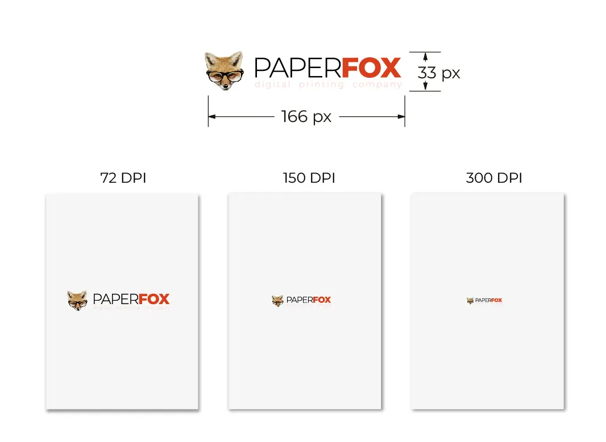

Пікселі в сантиметри - як конвертувати?
Тема нестандартна, хоча вона вона є дотичною до сфери друку та все ж виходить за неї. Тему для посту нам
підказали
замовники за
неодноразовим зверненням із одним і тим самим запитом скільки пікселів в сантиметрі?
.
Було вирішено раз і назавжди
закрити це питання. Тож ми створили онлайн коневертор (будь ласка, користуйтесь), а нижче детальний опис.
Основи переведення пікселів у сантиметри
Кому буде корисний цей пост? В першу чергу веб-дизайнери та маркетологи, художники, малих підприємців,
педагогів та фотографів. Якщо ви себе знайшли в цьому списку то наступна інформація буде корисною і ви
навчитесь
ефективно конвертувати пікселі в сантиметри для
різних цілей, включаючи якісний друк з роздільною здатністю 300 dpi, перегляд дизайну на екрані в
150
ppi і створення медіа для веб сторінок 72 ppi. Бажано цю статтю не розглядати як
100%
мануал, а як рекомендації які доможуть
зрозуміти базові принципи що прибере "головну біль" питання скільки пікселів мені необхідно?
щоб
замовити друку на холсті, наклейки, або чому скіншот буде надрукований неякісно.

У сфері веб-дизайну розуміння взаємозв'язку між пікселями та сантиметрами має вирішальне значення. У той час як пікселі (скорочення від "picture elements" - елементи зображення) є будівельними блоками цифрових зображень і не мають власного фізичного розміру, їхні реальні розміри залежать від роздільної здатності екрана. Сантиметри є стандартною одиницею виміру, особливо коли мова йде про друк. Як дизайнеру, вам часто доведеться конвертувати між цими одиницями, щоб дизайни виглядали чудово як на екрані, так і в друкованому вигляді.
Переведення пікселів у сантиметри залежить від двох ключових факторів:
- Роздільна здатність:: Кількість пікселів на дюйм - PPI, або точок на дюйм DPI у зображенні визначає його роздільну здатність. Зображення з вищою роздільною здатністю мають більше пікселів на кожен дюйм, що дає змогу отримати чіткіші та детальніші зображення. Щоб не плутатись муж сантиметрами та дюймами просто не задавайте собі питання "до чого тут дюйми?" - прийміть як є. Продовжимо.
- Фактичний розмір: Фізичні розміри зображення, що вимірюються в сантиметрах, визначають його розмір при друкуванні або відображенні на екрані.

Переведення пікселів у сантиметри для друку, превью та інших цілей
Формула перерхунку досить проста (ми її використовували під час розробки калькулятора) і розшифровується від абревіатури DPI:
px = cm / 2.54 * dpi
Наприклад для друку золотим стандартом є роздільна здатність 300 dpi і уявімо, що хочете роздрукувати
листівки 10х15 см:
10 см / 2,54 * 300 DPI = 1181 піксельів в ширину
15 см / 2.54 * 300 DPI = 1171 піксельів в довжину
Нижче описані стандарти DPI для різних рішень. Якщо Ви знаєте розмір, але не хочете витрачати час на
підрахунок то скористайтесь готовим калькулятором на початку статті.
- 72 DPI: Ідеально підходить для веб-графіки та екранного перегляду, забезпечуючи баланс між якістю зображення та розміром файлу, підходить для швидкого завантаження веб-сторінок та цифрових дисплеїв.
- 96 DPI: Зазвичай використовується для настільних моніторів і зображень стандартної роздільної здатності, забезпечуючи достатню чіткість і деталізацію для перегляду на екрані без надмірного збільшення розміру файлу.
- 150 DPI: Оптимально підходить для високоякісного перегляду на екрані та помірної якості друку, забезпечуючи баланс між чіткістю цифрового дисплея та роздільною здатністю друк. Цього достатньо для друку на холсті від 50х70 см (завдяки текстурі полотна), та плакатами А0 формату
- 200 DPI:Несуттєва різниця із 150 dpi. Роздільної здатності вистачить для якісного друку полотна 30х40 см та плакату А1 формату
- 300 DPI: Стандарт для високоякісного друку, що забезпечує чіткі та деталізовані результати, придатні для професійного друку, наклейок, постерів, листівок та інших друкованих матеріалів.
- 450 DPI: Зарезервовано для надвисокої якості друку, що забезпечує виняткову деталізацію та чіткість, підходить для художніх відбитків, фотографій і професійних публікацій, які вимагають максимальної точності та якості. Використовуємо за необхідності коли товщина лінії букви в 300 dpi становить лише 1 піксель. Находить своє застосування в листівках, наклейках, стікерпаках та візитках